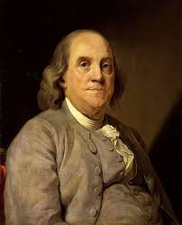

Urodził się ok. 17 stycznia 1706 roku w Bostonie. Zmarł ok. 17 kwietnia 1790 roku w Filadelfii.
Był on drukarzem. W 1724 r. wyjechał do Londynu. Założył własne wydawnictwo. Po powrocie w 1751 r. otworzył Academy of Pennsylvania i został członkiem zgromadzenia Pensylwanii.
W roku 1752 złapał prąd z błyskawicy do butelki lejdejskiej zapomocą latawca i dowiódł, że w piorunach znajduje się elektryczność.
Jego zdjęcie znajdowało się na banknotach w Ameryce. Wynalazł piorunochron. Był stwórcą takzwanych dzwoneczków Franklina, które sygnalizowały o nadejściu burzy.Tak on wygląda \/

Ku jego czci jednostkę ładunku elektrycznego w układzie CGS nazwano Franklinem.Benjamin Franklin był politykiem, dyplomatą, pisarzem, naukowcem i co naj dziwniejsze filozofem. Beniamin Frankilin Reprezentował Wielką Brytanię.